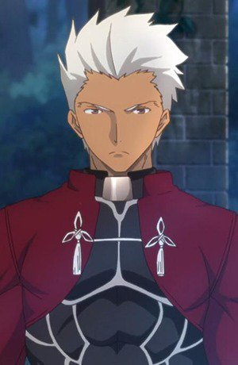

|
Akira Hayama |
- Food Wars!
- Food Wars! OVA
- Food Wars! The Second Plate
- Food Wars! The Second Plate OVA
- Food Wars! The Third Plate
|
Akira Hayama is a 92nd Tootsuki Generation and Jun Shiomi's assistant. He is quite the knowledge of usage of spices and is well known for sense of smell and mastery of aroma. He is confident and calm. |
|  |
Archer |
- Fate/stay Night
- Fate/stay Night Movie: Unlimited Blade Works
- Fate/stay Night TV Reproduction
- Carnival Phantasm
- Carnival Phantasm: Illya-jou
- Fate/stay night: Unlimited Blade Works - Prologue
- Fate/stay Night: Unlimited Blade Works
- Fate/stay Night: Unlimited Blade Works 2nd Season
- Fate/stay Night Movie: Heavan's Feel - I. Presage Flower
|
Archer is the servant of th archer class. He is the servant of Rin Toosaka. He is sarcastic and cynical but has a dark personality. He is skilled with bows and arrows. |
 |
Freed Justine |
- Fairy Tail
- Fairy Tail OVA
- Fairy Tail the Movie: Phoenix Priestess
- Fairy Tail (2014)
- Fairy Tail OVA (2016)
|
Freed Justine is a mage for the guild, Fairy Tail. He does not show his face often. He is the captain od the Raijinshuu, Laxus personal bodyguards. His magic style is Enchantments. He is loyal but quiet. |
 |
Reim Lunettes |
|
Reim Lunettes is a member of Pandora. Since he is a nervous guy, Break mock him most of the time. He is caring and percptive about Break and Sharon. |
 |
Seth Noel |
|